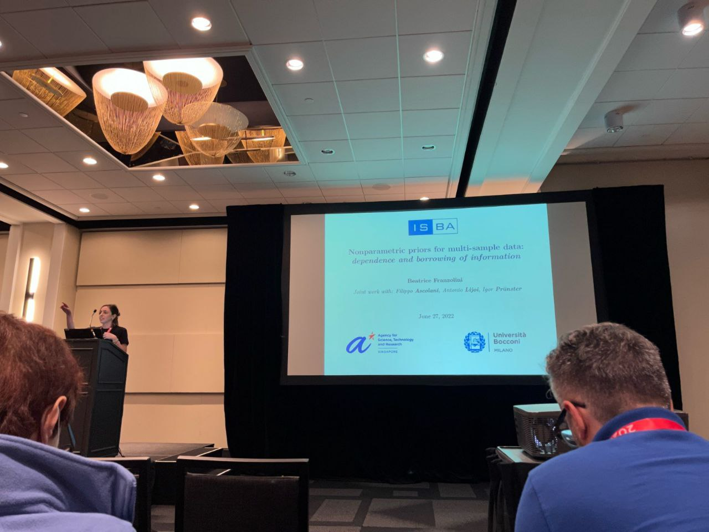

My principal research interests lie in Bayesian nonparametric theory and methodology, with a focus on
symmetry properties of multivariate random partitions,
dependent random measures and stochastic processes,
dynamic models, change-point detection, and network data analysis
biostatistics, social sciences, and financial econometrics applications.
Beatrice (Bea) Franzolini
E-mail: beatrice.franzolini@unimib.it and
beatrice.franzolini@unibocconi.it
Office at Bocconi U: Via Guglielmo Röntgen, 1, 4-A2-04
A full pdf version of my CV is available here.
Office at Bocconi U: Via Guglielmo Röntgen, 1, 4-A2-04
A full pdf version of my CV is available here.
News, Upcoming Talks, Sessions and Conferences
January 2026 I will present the work on complexity bounds for Dirichlet process slice samplers (joint with F. Gaffi)
at the Nonparametric Bayesian Inference - Computational Issues workshop, in Providence, USA.February 2026 I will present the work on complexity bounds for Dirichlet process slice samplers (joint with F. Gaffi) at the Workshop on Advances in BAyesian COmputation and modeling , in Padova, Italy.
June 2026 30th Nordic Conference in Mathematical Statistics , in Helsinki, Finland.
June 2026 5th Italian Meeting on Probability and Mathematical Statistics, in Palermo, Italy.
June 2026 International Symposium on Nonparametric Statistics - ISNPS 2026 , in Thessaloniki, Greece.
June 2026 The Bayesian Young Statisticians Meeting - BAYSM 2026, in Chiba, Japan.
June 2026 The 2026 ISBA World Meeting , in Nagoya, Japan.
August 2026 International Conference on Computational Statistics - COMPSTAT 2026 , in Athens, Greece.
I am honoured and happy to have received the 2025 Blackwell-Rosenbluth award for junior researchers in Bayesian statistics based on their overall contribution to the field and to the community.
Vladimir Badalyan was awarded the 2025 Prize for Best Master’s Thesis in Methodological Statistics in memory of Prof. Oliviero Lessi by the Italian Statistical Society for his thesis “Dependent Stick-Breaking Processes with Common Atoms: Properties, Representations, and Inference.”
I am thrilled and honored to have received the 2024 IMS New Researcher Travel Award from the Institute of Mathematical Statistics!
On 5 Feb 2025, I had the honor of giving an ISBA-BNP webinar on random partitions beyond exchangeability. If you miss it, you can watch the recording here: BNP webinar recording link .
Publications
Preprints and submitted articles
- Franzolini, B. and Gaffi, F. (2026+). Complexity bounds for Dirichlet process slice samplers.
- Franzolini, B., Lijoi, A., Prünster, I., and Rebaudo, G. (2025+). Multivariate species sampling models. arXiv:2503.24004 [pdf] [code]
- De Iorio, M., Heinecke A., Franzolini, B., and Cabral, R. (2025+). Singularities in Bayesian inference: crucial or overstated? arXiv:2501.06618
- Cremaschi, A., Franzolini, B., De Iorio, M., Chong, M., Ying, T. J., Michael, N., Gupta, V., Yap, F., Seng Lee, Y., Erikkson, J., and Fogel, A. (2025+). A Bayesian semi-parametric model for longitudinal growth and appetite phenotypes in children. arXiv:2501.17040
- Anceschi, N., Fasano, A., Franzolini, B., Rebaudo, G. (2025+). Scalable expectation propagation for generalized linear models. arxiv:2407.02128
Articles in refereed journals
- Franzolini, B., De Iorio, M., and Eriksson, J. (2026).
Conditional partial exchangeability: a probabilistic framework for multi-view clustering.
The Journal of the American Statistical Association, Theory and Methods, in press. DOI: 10.1080/01621459.2025.2609381
[pdf] [supplement pdf] [code] - Lazarus, M., Franzolini, B., Eriksson, J., Chong, M., Ying, T. J., De Iorio, M.,
Michael, M., Yap, F., Chong, Y. S., Kee, M., and Fogel, A. (2026).
Feeding practices and concerns as mediators between maternal mental health and eating behaviours in early childhood.
Appetite, 217, 108340. DOI:10.1016/j.appet.2025.108340
[link] - Cremaschi, A., van den Boom, W., Ng, N.B.H., Franzolini, B.,
Tan, K.B., Yen, J.C.K., Tan, K.H., Chong, Y.-S., Eriksson, J.G., De Iorio, M. (2025).
Post-partum screening for type 2 diabetes in women with a history of gestational diabetes mellitus: A cost-effectiveness analysis in Singapore.
Value in Health Regional Issues, 45, 101048. DOI:10.1016/j.vhri.2024.101048
[link] - Ascolani, F., Franzolini, B., Lijoi, A., and Prünster, I. (2024).
Nonparametric priors with full-range borrowing of information.
Biometrika, 111(3), 945–969. DOI:10.1093/biomet/asad063
[pdf] [code] - Franzolini, B. and Rebaudo, G. (2024).
Entropy regularization in probabilistic clustering.
Statistical Methods & Applications, 33(1), 37–60. DOI:10.1007/s10260-023-00716-y
[pdf] [code] - Franzolini, B., Beskos, A., De Iorio, M., Poklewski Koziell, W., and Grzeszkiewicz, K. (2024).
Change point detection in dynamic Gaussian graphical models: the impact of COVID-19 pandemic on the US stock market.
The Annals of Applied Statistics, 18(1), 555-584. DOI:10.1214/23-AOAS1801
[pdf] [code] - Franzolini, B., Cremaschi, A., van den Boom, W., and De Iorio, M. (2023).
Bayesian clustering of multiple zero-inflated outcomes.
Philosophical Transactions of the Royal Society A , 381(2247): 20220145. DOI:10.1098/rsta.2022.0145
[pdf] [code] - Franzolini, B., Lijoi, A., and Prünster, I. (2023).
Model selection for maternal hypertensive disorders with symmetric hierarchical Dirichlet processes.
The Annals of Applied Statistics, 17(1): 313-332. DOI:10.1214/22-AOAS1628
[pdf] [code]
Refereed discussions and conference proceedings
- Franzolini, B., Rebaudo, G. (2025) Invited discussion on: “A tree perspective on stick-breaking models in covariate-dependent mixtures” by Horiguchi, A., Chan, C., and Li, M. Bayesian Analysis, Advance Publication: 1-28. DOI: 10.1214/24-BA1462
- Catalano, M., Franzolini, B., Giordano, M., Rebaudo, G. (2024) A discussion on: “Sparse Bayesian factor analysis when the number of factors is unknown” by Frühwirth-Schnatter, S., Hosszejni, D., Freitas Lopes, H. Bayesian Analysis, 18(1): 287-366. DOI: 10.1214/24-BA1423 [pdf]
- Franzolini, B. (2024). How to leverage Bayesian mixtures for dynamic clustering and classification In Book of Short Papers SIS 2024, in press. [pdf] [code]
- Bondi, L., Franzolini, B., Palma, M. (2024). A longitudinal study of the gender gap in school grades via flexible Bayesian Beta regression In Book of Short Papers SIS 2024, in press. [pdf]
- Franzolini, B., Bondi, L., Fasano, A., and Rebaudo, G. (2023). Bayesian forecasting of multivariate longitudinal zero-inflated counts: an application to civil conflict. In Book of Short Papers CLADAG 2023, 465-468. (Editors: Corretto, P., Giordano G., La Rocca, M., Parrella, M. L., Rampichini, C.) ISBN 9788891935632 [book] [pdf]
- Fasano, A., Anceschi, N., Franzolini, B., and Rebaudo, G. (2023). Efficient computation of predictive probabilities in probit models via expectation propagation. In Book of Short Papers CLADAG 2023, 449-452. (Editors: Corretto, P., Giordano G., La Rocca, M., Parrella, M. L., Rampichini, C.) ISBN 9788891935632 [book] [pdf] [code]
- Fasano, A., Anceschi, N., Franzolini, B., and Rebaudo, G. (2023). Efficient expectation propagation for posterior approximation in high-dimensional probit models. In Book of Short Papers SIS 2023, 1133-1138. (Editors: Chelli, F. M., Ciommi, M., Mariani, F., Recchioni, M. C.) ISBN 9788891935618 [book] [pdf] [code]
- Rebaudo G., Fasano, A., Franzolini, B., and Müller, P. (2023) A discussion on: “Evaluating sensitivity to the stick-breaking prior in Bayesian nonparametrics” by Giordano, R., Liu, R., Jordan M. I. and Broderick T. Bayesian Analysis, 18(1): 287-366. DOI: 10.1214/22-BA1309 [pdf]
- Franzolini, B. and Rebaudo, G. (2022). A regularized-entropy estimator to enhance cluster interpretability in Bayesian nonparametrics. In Book of Short Papers SIS 2022, 387-397. (Editors: Balzanella, A., Bini, M., Cavicchia, C. and Verde, R.) ISBN 9788891932310 [book] [pdf]
- Ascolani, F., Franzolini, B., Lijoi, A., and Prünster, I. (2021). On the dependence structure in Bayesian nonparametric priors. In Book of Short Papers SIS 2021, 1219-1225. (Editors: Perna, C., Salvati, N. and Schirripa Spagnolo, F.) ISBN 9788891927361 [book-part1] [book-part2] [pdf]
PhD Thesis
- Franzolini, B. (Advisors: Lijoi, A., and Prünster, I.), Feb 2022. On Dependent Processes in Bayesian Nonparametrics: Theory, Methods, and Applications. Bocconi University [pdf - high quality] [pdf - compressed]
Teaching
TEACHING MATERIALS
You are free to use this material as you wish; citation to the original files is highly appreciated.
Any typos or inaccuracies can be reported to me by email and would be greatly appreciated.
You are free to use this material as you wish; citation to the original files is highly appreciated.
Any typos or inaccuracies can be reported to me by email and would be greatly appreciated.
These materials include an introductory lecture on network data analysis, lasting approximately 120 minutes (definitions, descriptive statistics, and stochastic block models) provided as PDF slides (with TeX sources), and a 60-minute R exercise.
[Slides] [TeX sources] [Exercise in R]
COURSES
@ UniMiB
Statistics I (BSc) - Course Director - a.y. 2025-26
Inference Principles (MSc) - Course Director - a.y. 2025-26
@ Bocconi University
Bayesian Statistical Methods (MSc) - Course Director - a.y. 2023-24, 2024-25, 2025-26
Statistics (BSc) - Lecturer - a.y. 2019-20, 2020-21
Financial Econometrics and Empirical Finance (MSc) - Lecturer - a.y. 2020-21
Statistics (BSc) - Teaching Assistant - a.y. 2018-19
Financial Econometrics and Empirical Finance (MSc) - Teaching Assistant - a.y. 2018-19, 2019-20
@ Universita' Cattolica Del Sacro Cuore
Statistics (BSc) - Teaching Assistant - a.y. 2019-2020
About me
A full pdf version of my CV is available here.
I am an Assistant Professor of Statistical Sciences (Italian RTT)
at the Department of Economics, Management and Statistics (DEMS), at
the University of Milano-Bicocca (UniMiB) and a Research and Teaching Fellow at Bocconi University.

I completed my PhD in Statistics in 2022 at Bocconi University,
under the supervision of Antonio Lijoi and Igor Prünster.
After my PhD, I was a Research Fellow at the Agency for Science, Technology and Research (A*STAR)
and a member of the Division of Biomedical Data Science (BiDS), led by Maria De Iorio,
at the National University of Singapore (NUS).
Until recently, I was a Junior Assistant Professor (Italian RTDA) at the Bocconi Institute for Data Science and Analytics,
Bocconi University, Italy.
I served on the board of the Junior Section of ISBA (j-ISBA) in 2023 and 2024, holding the position of Chair in 2024.
